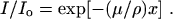
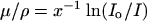
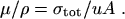
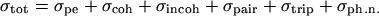
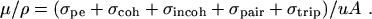
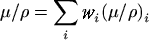

|  | (eq 1) |
Equation (1) can be rewritten as
|  | (eq 2) |
from which μ/ρ can be obtained from measured values of Io, I and x.
Note that the mass thickness is defined as the mass per unit area, and is obtained by multiplying the thickness t by the density ρ, i.e., x = ρt.
The various experimental arrangements and techniques from which μ/ρ can be obtained, particularly in the crystallographic photon energy/wavelength regime, have recently been examined and assessed by Creagh and Hubbell (1987, 1990) as part of the International Union of Crystallography (IUCr) X-Ray Attenuation Project. This has led to new tables of μ/ρ in the 1992 International Tables for Crystallography (Creagh and Hubbell, 1992). The current status of μ/ρ measurements has also been reviewed recently by Gerward (1993), and an updated bibliography of measured data is available in Hubbell (1994).
Present tabulations of μ/ρ rely heavily on theoretical values for the total cross section per atom, σtot, which is related to μ/ρ according to
|  | (eq 3) |
In (eq 3), u (= 1.660 540 2 × 10-24 g Cohen and Taylor 1986) is the atomic mass unit (1/12 of the mass of an atom of the nuclide 12C), A is the relative atomic mass of the target element, and σtot is the total cross section for an interaction by the photon, frequently given in units of b/atom (barns/atom), where b = 10-24 cm2.
The attenuation coefficient, photon interaction cross sections and related quantities are functions of the photon energy. Explicit indication of this functional dependence has been omitted to improve readability.
The total cross section can be written as the sum over contributions from the principal photon interactions,
|  | (eq 4) |
where σpe is the atomic photoeffect cross section, σcoh and σincoh are the coherent (Rayleigh) and the incoherent (Compton) scattering cross sections, respectively, σpair and σtrip are the cross sections for electron-positron production in the fields of the nucleus and of the atomic electrons, respectively, and σph.n. is the photonuclear cross section.
Photonuclear absorption of the photon by the atomic nucleus results most usually in the ejection of one or more neutrons and/or protons. This interaction can contribute as much as 5 % to 10 % to the total photon interaction cross section in a fairly narrow energy region usually occurring somewhere between 5 MeV and 40 MeV, depending on where the giant resonance of the target nuclide falls (see, e.g., Hayward, 1970; Fuller and Hayward, 1976; and Dietrich and Berman, 1988; also the illustrative tables in Hubbell, 1969, 1982). The effects of this interaction can be observed in measurements of the total attenuation coefficient (see, e.g., Gimm and Hubbell, 1978). However, this cross section has not been included in previous tabulations because of the difficulties due to (a) the irregular dependence of both the magnitude and resonance-shape of the cross section as a function of both Z and A; (b) the gaps in the available information, much of which is for separated isotopes or targets otherwise differing from natural isotopic mixtures; and (c) the lack of theoretical models for σph.n. comparable to those available for calculations of the other cross sections of interest. The practice of omitting the contribution of the photonuclear cross section in tables of the mass attenuation coefficient has been continued in this work, along with the neglect of other less-probable photon-atom interactions, such as nuclear-resonance scattering and Delbrück scattering.
Our results for the elements are given in Table 3 for elements Z = 1 to 92 and photon energies 1 keV to 20 MeV, and have been calculated according to
|  | (eq 5) |
Values for the relative atomic mass A of the target elements were taken from Martin (1988) and can be extracted from the values of Z/A given in Table 1; values for the individual contributing cross sections are those found in the current NIST database (see Berger and Hubbell, 1987), as outlined below.
Atomic photoeffect. For photon energies from 1 keV to 1.5 MeV, values of the photoelectric cross section, σpe, are those calculated by Scofield (1973), based on his solution of the Dirac equation for the orbital electrons moving in a static Hartree-Slater central potential. No renormalization was performed using those factors given by Scofield for the elements with Z = 2 to 54 to convert to values expected from a relativistic Hartree-Fock model. This represents a break with the practice by Hubbell (1977, 1982) and Hubbell et al. (1980) in which this renormalization had been done.
Absorption-edge fine structure can be experimentally observed using continuum-energy photon sources and high-resolution detectors (see, e.g., Faessler, 1955; Deslattes, 1969; Hubbell et al., 1974; Lytle et al., 1984; and Del Grande, 1986, 1990), and the observed variations are subject to chemical, phase and other environmental effects, such as temperature (Lytle, 1963). As has been done in the past, this fine structure is ignored in the present compilation. The cross sections in the vicinity of absorption edges are instead assumed to have simple sawtooth shapes. Values at the edge have been obtained by extrapolation of the near-edge subshell cross sections of Scofield (1973) to the threshold edge energies given by Bearden and Burr (1967), according to the same procedure used by Berger and Hubbell (1987) to prepare the NIST database. The interpolation procedures used for the present tables are slightly different from those used by Berger and Hubbell; here we use a cubic Hermite interpolant for the individual subshell cross sections rather than a cubic spline for the total photoeffect cross section, which results in occasional small differences in the vicinity of M- and N-shell edges of high-Z elements.
Scofield's (1973) photoeffect calculations were limited to photon energies of 1.5 MeV and below. His data were extended to higher energies (where the photoelectric cross section is quite small) by connecting them to the high-energy asymptotic values of Pratt (1960) through use of a semi-empirical formula (Hubbell, 1969).
Coherent and incoherent scattering. Values for the coherent (Rayleigh) scattering cross section, σcoh, are taken from Hubbell and Øverbø (1979). These were calculated by numerical integration of the Thomson (1906) formula weighted by F2(q,Z), where F(q,Z) is the relativistic Hartree-Fock atomic form factor and q is the momentum transfer. The compilation of F(q,Z) by Hubbell and Øverbø was based on piecing together, over the different ranges of q and Z, values given by Pirenne (1946) for Z = 1, and those of Doyle and Turner (1968), Cromer and Waber (1974) and Øverbø (1977, 1978) for the other elements.
Values for the incoherent (Compton) scattering cross section, σincoh, are from Hubbell et al. (1975), obtained from numerical integration of the Klein-Nishina (1929) differential formula weighted by the incoherent scattering function S(q,Z). For their compilation of S(q,Z), Hubbell et al. (1975) pieced together results given by Pirenne (1946) (Z = 1), Brown (1970a, 1970b, 1971, 1972, 1974) (Z = 2 to 6, with configuration interaction) and by Cromer and Mann (1967) and Cromer (1969) (Z = 7 to 100, from a non-relativistic Hartree-Fock model). Radiative and double-Compton corrections from Mork (1971) were applied to the integrated values for σincoh.
Electron-positron pair and triplet production cross sections. Cross sections for the production of electron-positron pairs (e-, e+) in the field of the atomic nucleus, σpair, and for the production of triplets (2e-, e+) in the field of the atomic electrons, σtrip, are taken from the compilation of Hubbell et al. (1980). Their synthesis combined the use of formulas from Bethe-Heitler theory with various other theoretical models to take into account screening, Coulomb, and radiative corrections. Different combinations were used in the near-threshold, intermediate and high-energy regions to obtain the best possible agreement with experimental cross sections (Gimm and Hubbell, 1978).
Mixtures and compounds. Values of the mass attenuation coefficient, μ/ρ, for the 48 mixtures and compounds (assumed homogeneous) are given in Table 4, and were obtained according to simple additivity:
|  | (eq 6) |
where wi is the fraction by weight of the ith
atomic constituent, and the (μ/ρ)i values are from Table 3.
The assumed fractions by weight are given in Table 2.
To obtain (μ/ρ)i
values at all the absorption edges of all constituent elements, interpolation
has been performed separately for the cross sections indicated in (eq 5),
including the photoeffect cross sections for the individual atomic subshells.
Abstract | Introduction | Mass Atten. Coef. | Mass Energy-Absorp. Coef. | Summary | References